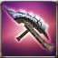
Crescemento Tonfa
Available to equip above Lv. 1 - Recruitment character
Tonfa that is decided the A.R. and ATK Power according to the players level.
Max 6 enhancement possible.
Attributes
Rating: 0

Available to equip above Lv. 1 - Recruitment character
Tonfa that is decided the A.R. and ATK Power according to the players level.
Max 6 enhancement possible.
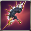
Available to equip above Lv. 1 - Recruitment character
Trial Tonfa made as a tester to develop the powerful weapon. Cant be used continuously, as its durability wasnt considered while making.[ATK to All types+120%, Attack SPD+20%]
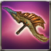
Available to equip above Lv. 1 - Recruitment character
Final Match Lobby
Available to equip above Lv. 1 - Recruitment character
Cancel Recording
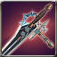
Available to equip above Lv. 1 - Recruitment character
Blacksmith, Bryan made it by refining Blue Armonium with her special skill.{br}[Blocking +5]{br}[ATK +100% to Lifeless, Wildlife, Daemon, Undead and Human types]
Available to equip above Lv. 1 - Recruitment character
A Vespanolas refined tonfa for pioneers. It cannot be used continuously since its durability wasnt considered. [ATK toward all types +100%, ATK SPD +20%]
Available to equip above Lv. 1 - Recruitment character
Trial Tonfa made as a tester to develop a better quality weapon. Unable to use it continuously, as its durability was not considered while making.[All types of ATK +100%, ATK SPD +20%]
Available to equip above Lv. 84 - Recruitment character
This tonfa has been forged to be easily wielded by pioneers. You can feel a mysterious power from it.
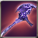
Lv.100 - Exclusive equipment for recruitment character / Master exclusive
A Tonfa that was crafted by Armonium which maintained holy power in spite of erosion of Abyss. It maintains the weapon shape by the holy power, but the beautiful shape has been encroached and ominous. [Penetration+10, Immunity-5, Accuracy+10]
Available to equip above Veteran - Recruitment characters
It protects your hands and enhances ATK by adding an edge. [A.R. +2]
 Powdered jewel x10 Powdered jewel x10 |
 Pure Otite x30 Pure Otite x30 |
 Pure Ionium x100 Pure Ionium x100 |
 Pure Aidanium x100 Pure Aidanium x100 |
 Enchantchip Lv 92 x3 Enchantchip Lv 92 x3 |
 Fool Stone x1 Fool Stone x1 |
Available to equip above Veteran - Recruitment characters
A compact weapon that gives you the luxury to unleash a flurry of short-range strikes.
 Dragon Heart x1 Dragon Heart x1 |
 Composite steel x100 Composite steel x100 |
| Mega Aidanium x100 |
| Mega Etretanium x100 |
| Enchantchip Lv 100 x50 |
| Fool Stone x1 |
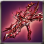
Available to equip above Expert Level - Recruit Character
A tonfa that Dr.Torsche made based on the founded weapons in the Lucifer Castle. It can inflict [CounterAttack 2]. [Accuracy +10]
 Melee Weapon Crystal - Lv 35 x2 Melee Weapon Crystal - Lv 35 x2 |
 Star Stone x10 Star Stone x10 |
 Wheel of Time x100 Wheel of Time x100 |
| Enchantchip Veteran x50 |
 Elemental Jewel x5 Elemental Jewel x5 |
| Fool Stone x1 |
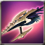
Available to equip above Expert Level - Recruit Character
A compact weapon that gives you the luxury to unleash a flurry of short-range strikes. [Block +5]
Available to equip above Expert Level - Recruit Character
A compact weapon that gives you the luxury to unleash a flurry of short-range strikes. [Block +5]
| Enchantchip Veteran x3 |
| Melee Weapon Crystal - Lv 30 x1 |
 Ancient Rune - Te x50 Ancient Rune - Te x50 |
| Ancient Rune - An x50 |
 liquid of Heaven x10 liquid of Heaven x10 |
| Fool Stone x1 |
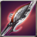
Available to equip above Expert Level - Recruit Character
A Tonfa used by Bristia soldiers. It shows its thousand different efficiencies depending on the custody condition. [Blocking +5]
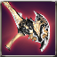
Available to equip above Expert Level - Recruit Character
A tonfa that was crafted by Armonium which maintained holy power in spite of erosion of Abyss. [Accuracy +10]
| Enchantchip Veteran x100 |
| Melee Weapon Crystal - Lv 34 x1 |
 Armonias Holywater x10 Armonias Holywater x10 |
| Fool Stone x1 |
| Fool Stone x1 |
Available to equip above Expert Level - Recruit Character
A compact weapon that gives you the luxury to unleash a flurry of short-range strikes. [Block +5]
| Enchantchip Veteran x50 |
| Melee Weapon Crystal - Lv 33 x1 |
| Ancient Rune - Te x50 |
| Ancient Rune - An x50 |
| Fool Stone x1 |
| Fool Stone x1 |
Available to equip above Expert Level - Recruit Character
A compact weapon that gives you the luxury to unleash a flurry of short-range strikes. [Block +5]{br}[All types of ATK +100%]{br}It will be deleted, when the event ends.
Available to equip above Expert Level - Recruit Character
A tonfa that Dr.Torsche made based on the founded weapons in the Lucifer Castle. It can inflict [CounterAttack 2]. [Accuracy +10]{br}[All types of ATK +100%]
Available to equip above Expert Level - Recruit Character
A compact weapon that gives you the luxury to unleash a flurry of short-range strikes. [Block +5]
Available to equip above Expert Level - Recruit Character
A weapon made out of Fallen Angels Curse. It provides a strong power and disaster to the wielder. It gives endless hatred to user and ask them to spill it out. [Basic ATK +5%, Penetration +5, Block +5]
Available to equip above Expert Level - Recruit Character
A weapon made out of Fallen Angels Curse. It provides a strong power and disaster to the wielder. It gives endless hatred to user and ask them to spill it out. [Basic ATK +5%, Penetration +5, Block +5]
| Melee Weapon Crystal - Lv 33 x2 |
 Moon Stone x5 Moon Stone x5 |
 a lump of Platinum x3 a lump of Platinum x3 |
| Dragon Heart x1 |
| Fool Stone x1 |
| Fool Stone x1 |
Available to equip above Expert Level - Recruit Character
Tonfa that belongs to a prospering family in the past. At that time, giving weapons to the nation was a way to be approved of the familys legitimacy officially. [Blocking +5, Penetration +3]
| Enchantchip Veteran x100 |
| Melee Weapon Crystal - Lv 33 x1 |
 Shiny Crystal x200 Shiny Crystal x200 |
| Fool Stone x1 |
| Fool Stone x1 |
Available to equip above Master - Recruitment characters
A tonfa made from the power in Stone Body of Cortes. It can inflict [CounterAttack 2]. [Accuracy +10]
 Symbol of Naraka x100 Symbol of Naraka x100 |
| Melee Weapon Crystal - Lv 35 x1 |
 Cortess Volition x50 Cortess Volition x50 |
 Devils Dream x100 Devils Dream x100 |
| liquid of Heaven x3 |
| Fool Stone x1 |
Available to equip above Master - Recruitment characters
A Bristia Weapon, which is newly made by the artisan spirit of Victor. It shows a strong performance.
Available to equip above Master - Recruitment characters
A Bristia Weapon, which is newly made by the artisan spirit of Victor. It shows a strong performance.
 Pure Essence x1000 Pure Essence x1000 |
 Fallen Essence x1000 Fallen Essence x1000 |
 Balance Essence x1000 Balance Essence x1000 |
 Warped weapon debris x1500 Warped weapon debris x1500 |
| Melee Weapon Crystal - Lv 36 x1 |
| Fool Stone x1 |
Available to equip above High Master - Recruitment characters
Blacksmith Bryan made this by refining Blue Armonium with her special skill. It can be blessed by Baruch, the Priest of the Armonia Cathedral.{br}[Block +5]
| Melee Weapon Crystal - Lv 36 x1 |
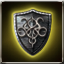 Symbol of DarkKnight x100 |
 Symbol of DarkPriest x100 Symbol of DarkPriest x100 |
 Armonium Ore - Blue x20 Armonium Ore - Blue x20 |
 Armonia Token x200 Armonia Token x200 |
| Armonias Holywater x150 |
| liquid of Heaven x5 |
Available to equip above Master - Recruitment characters
A compact weapon that gives you the luxury to unleash a flurry of short-range strikes. Recreated by Valeron and showing amazing power[Block +10, Enhanced ATK]
| Melee Weapon Crystal - Lv 35 x1 |
 Symbol of Dark Shodow, G x200 Symbol of Dark Shodow, G x200 |
 Symbol of Patrikyon x200 Symbol of Patrikyon x200 |
 The Rune of Talos, Shiny Otite x50 The Rune of Talos, Shiny Otite x50 |
| liquid of Heaven x3 |
| Fool Stone x1 |
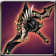
Available to equip above High Master - Recruitment characters
It was restored through the legendary Blacksmith Ignacio Valerons Weapon Manufacture Book. Though its performance is less than half of the original, it displays unequaled ability. [Valerons Protection] can be added by Violet Valeron.{br}[Block +5]
| Melee Weapon Crystal - Lv 37 x1 |
| Black Insignia of Evora x100 |
| Golden Insignia of Magic Corps x100 |
| Symbol of Illicia x50 |
| Warped weapon debris x500 |
 Shiny Sollarion x300 Shiny Sollarion x300 |
| liquid of Heaven x5 |
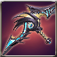
Available to equip above High Master - Recruitment characters
Tonfa containing Wind Master Ordens power
[Blocking+5, PEN+10, Extra Damage to All Tribes+25%]
| Melee Weapon Crystal - Lv 38 x1 |
| Armonium Ore - Red x500 |
| Armonium Ore - Red x500 |
 TimePiece : Rose x500 TimePiece : Rose x500 |
| TimePiece : Rose x900 |
 Vertrauen Symbol x1 Vertrauen Symbol x1 |
 Star Essence x50 Star Essence x50 |
Available to equip above High Master - Recruitment characters
Tonfa containing Wind Master Ordens power
[Blocking+5, PEN+10, Extra Damage to All Tribes+25%]
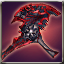
Available to equip above High Master - Recruitment characters
The weapon made to fight against Abyss Army by processing Earth-color Armonium containing Abyss Essence. It can retain the shape as a weapon thanks to the holy power, but its shape looks ominous owing to Abyss Essences power.{br}[Extra damage to Demon type enemy+25%]{br}[Blocking+5]
| Melee Weapon Crystal - Lv 38 x1 |
| liquid of Heaven x10 |
 Armonium Ore - Black x10000 Armonium Ore - Black x10000 |
| Fool Stone x1 |
| Fool Stone x1 |
Available to equip above High Master - Recruitment characters
The weapon made to fight against Abyss Army by processing Earth-color Armonium containing Abyss Essence. It can retain the shape as a weapon thanks to the holy power, but its shape looks ominous owing to Abyss Essences power.{br}[Extra damage to Demon type enemy+25%]{br}[Blocking+5]
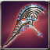
Available to equip above High Master - Recruitment characters
Collect Opportunity: %s
Available to equip above High Master - Recruitment characters
Collect Opportunity: %s
Available to equip above Master - Recruitment characters
A tonfa made from the power in Stone Body of Cortes. It can inflict [CounterAttack 2]. [Accuracy +10]
| Symbol of Naraka x100 |
| Melee Weapon Crystal - Lv 35 x1 |
| Cortess Volition x50 |
| Devils Dream x100 |
| liquid of Heaven x3 |
| Fool Stone x1 |
Available to equip above High Master - Recruitment characters
Blacksmith Bryan made this by refining Blue Armonium with her special skill. It can be blessed by Baruch, the Priest of the Armonia Cathedral.{br}[Block +5]
Available to equip above Master - Recruitment characters
A compact weapon that gives you the luxury to unleash a flurry of short-range strikes. Recreated by Valeron and showing amazing power[Block +10, Enhanced ATK]
Available to equip above High Master - Recruitment characters
It was restored through the legendary Blacksmith Ignacio Valerons Weapon Manufacture Book. Though its performance is less than half of the original, it displays unequaled ability. [Valerons Protection] can be added by Violet Valeron.{br}[Block +5]
Available to equip above Master - Recruitment characters
A tonfa made from the power in Stone Body of Cortes. It can inflict [CounterAttack 2]. [Accuracy +10]{br}[All types of ATK +100%]
Available to equip above High Master - Recruitment characters
Blacksmith, Bryan made it by refining Blue Armonium with her special skill.{br}[Blocking +3]{br}{br}[All types of ATK +100%]
Available to equip above High Master - Recruitment characters
Old weapon Violet Valeron restored in the past. Its performance is lower than the original version.{br}[ATK to all types+100%]
Available to equip above High Master - Recruitment characters
Suggest the Guard Service and receive Bonus EXP. (Available only to Families Lv.15+)
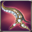
Available to equip above Master - Recruitment characters
This is the best tonfa which consolidates the technique of new continent. It has beauty and strength. Can inflict [CounterAttack 2]. [Accuracy +10, ATK SPD +10%]
| Melee Weapon Crystal - Lv 35 x2 |
| Star Stone x30 |
 kryptonite x200 kryptonite x200 |
| Enchantchip Veteran x100 |
| Elemental Jewel x10 |
| Fool Stone x1 |
Available to equip above High Master - Recruitment characters
Blacksmith, Bryan made it by refining Blue Armonium with her special skill. This can be blessed by Baruch, the Priest of the Armonia Cathedral.{br}[Blocking +5]